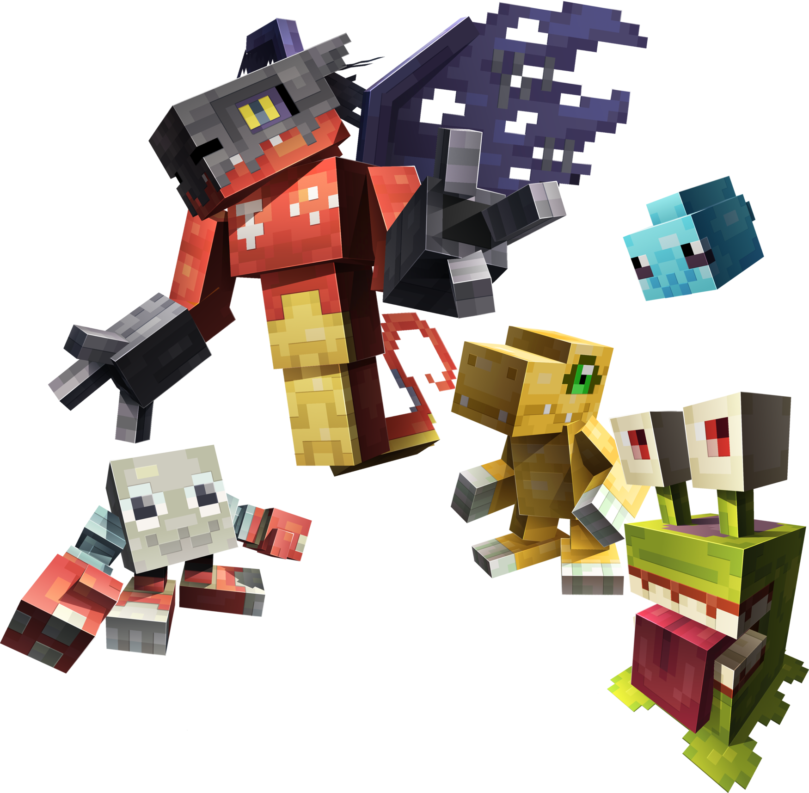
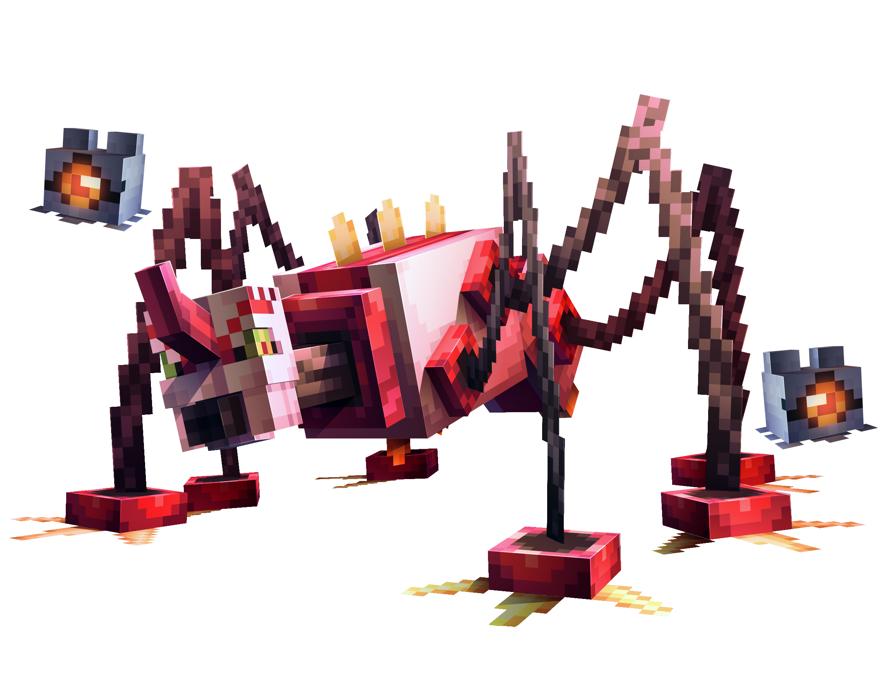
About The Mod
Mobs
Digimon partners and wild encounters added by the mod, grouped by evolution stage.
- In The Mod
-
- Babies I
- Algomon
- Bommon
- Botamon
- Bubbmon
- Chicomon
- Cocomon
- Dokimon
- Fusamon
- Jyarimon
- Keemon
- Kuramon
- Nyokimon
- Petitmon
- Pipimon
- Poyomon
- Punimon
- Puyomon
- Sunamon
- Yuramon
- Zurumon
- Babies II
- Algomon (BabyII)
- Arkadimon
- Babydmon
- Bibimon
- Bowmon
- Chapmon
- Chibimon
- Chocomon
- Gigimon
- Goromon
- Koromon
- Missimon
- Mochimon
- Monimon
- Pagumon
- Puyoyomon
- Pyocomon
- Tanemon
- Tokomon
- Tsumemon
- Tsunomon
- Yarmon
- Rookies
- Agumon (Black)
- Agumon
- Algomon (Child)
- Alraumon
- Bearmon
- BEMmon
- Betamon
- BlackGabumon
- Dracomon
- Gabumon
- Guilmon
- Impmon
- Jazamon
- Jellymon
- Kamemon
- Keramon
- Koemon
- Kunemon
- Loogamon
- Lopmon
- ModokiBetamon
- Palmon
- Patamon
- Piyomon
- ProtoGizmon
- Pulsemon
- Shoutmon
- Sparrowmon
- Sunarizamon
- Tentomon
- Tsukaimon
- Tyumon
- V-mon
- Champions
- Airdramon
- Akatorimon
- Algomon (Adult)
- Angemon
- Archelomon
- Baboongamon
- Bakemon
- Ballistamon
- Birdramon
- BlackGalgomon
- BlackGaogamon
- BlackGrowmon
- BladeKuwagamon
- Boogiemon
- Bulkmon
- Centalmon
- Chackmon
- Chrysalimon
- Coelamon
- Coredramon (Blue)
- Coredramon (Green)
- Cyclomon
- DarkLizamon
- DarkTyranomon
- Devidramon
- Devimon
- Dogmon
- Dorulumon
- Drimogemon
- Exermon
- Fladramon
- FlareLizamon
- Flymon
- Frogmon
- Gargomon
- Garurumon (Black)
- Garurumon
- Gawappamon
- Geremon
- Gesomon
- GizmonAT
- Gokimon
- GoldNumemon
- Golemon
- Golemon (PS)
- Greymon (Blue)
- Greymon
- Grimmon
- Growmon (Data)
- Growmon
- Gryzmon
- Guardromon (Gold)
- Hookmon
- IceDevimon
- Jazardmon
- Kabuterimon
- KaratukiNumemon
- Kenkimon
- Kiwimon
- Kuwagamon
- Landramon
- Lighdramon
- Loogarmon
- Mailbirdramon
- Manbomon
- Mechanorimon
- Mimicmon
- MoriShellmon
- Namakemon
- Nanimon
- Numemon
- Octmon
- Parasaurmon
- Pegasmon
- PlatinumScumon
- Ponchomon
- Pteranomon
- Pucchiemon
- Pucchiemon (Green)
- Ranamon
- RaptorSparrowmon
- Raremon
- RedV-dramon
- Runnermon
- Saberdramon
- Scumon
- Seadramon
- Shellmon
- ShimaUnimon
- Shoutmon (King Ver.)
- ShoutmonX2
- ShoutmonX3
- Shurimon
- TeslaJellymon
- Thunderballmon
- Togemon
- Tortamon
- Turuiemon
- Tuskmon
- Tyranomon
- Unimon
- V-dramon (Black)
- V-dramon
- Vegimon
- Wendimon
- Wizarmon
- Woodmon
- XV-mon
- Zassoumon
- Cockatrimon
- Fangmon
- Ultimates
- AeroVeedramon
- Ajatarmon
- Algomon (Perfect)
- AlturKabuterimon (Blue)
- AlturKabuterimon (Red)
- Andiramon (Deva)
- Andiramon
- Andromon
- Assaultmon
- BigMamemon
- BlackMachGaogamon
- BlackMegaloGrowlmon
- BlackRapidmon
- BlackWereGarurumon
- Blossomon
- Brachimon
- Cargodramon
- Cerberumon
- ChaosGrimmon
- Cyberdramon
- Digitamamon
- DinoBeemon
- Etemon
- ExTyrannomon
- Garudamon
- Ghilliedhumon
- Gigadramon
- Giromon
- GizmonXT
- Gogmamon
- GoldVeedramon
- Groundramon
- Helloogarmon
- HolyAngemon
- Infermon
- Jazarichmon
- Jokermon
- Jyureimon
- Karatenmon
- KingScumon
- Lilimon
- Mamemon
- MameTyramon
- Manticoremon
- MarineDevimon
- Megadramon
- MegaloGrowlmon (Data)
- MegaloGrowlmon
- MegaSeadramon
- Mephismon
- MetalGreymon
- MetalGreymon (Virus)
- MetalMamemon
- MetalTyrannomon
- Monzaemon
- Nanomon
- Okuwamon
- Oleamon
- OmegaShoutmon
- Paildramon
- Petaldramon
- Piccolomon
- Piranimon
- Pistmon
- PolarBearmon
- Pumpmon
- RareRaremon
- Saggitarimon
- Shakkoumon
- Shawujinmon
- Shootmon
- ShoutmonX5
- SkullGreymon
- Soloogarmon
- Tekkamon
- Thetismon
- TonosamaGekomon
- Toropiamon
- Vademon
- Valvemon
- WaruMonzaemon
- WaruSeadramon
- WereGarurumon
- Wisemon
- Model Only — Not Yet Implemented
- Babies I
- Choromon
- Pupumon
- Zerimon
- Paomon
- Pafumon
- Babies II
- Caprimon
- Gummymon
- Puroromon
- Xiaomon
- Kyaromon
- Rookies
- Cutemon
- Gottsumon
- Hagurumon
- Kudamon (2006)
- Kudamon
- PawnChessmon (White)
- Pillomon
- Pristimon
- Shakomon
- Shoemon
- Solarmon
- Terriermon
- Tinkermon
- Champions
- Bitmon
- Clockmon
- Clockmon 2010
- Eyesmon
- Fairimon
- Galgomon
- Gladimon
- Guardromon
- Harpymon
- Icemon
- Kangarumon
- KnightChessmon (White)
- Kyubimon (Silver)
- Kyubimon
- Lekismon
- Mikemon
- Monochromon
- Moosemon
- Opossummon
- Pidmon
- Porcupamon
- Publimon
- Reppamon
- Revolmon
- Meramon
- Sheepmon
- ShoeShoemon
- Starmon
- SymbareAngoramon
- Tankmon
- Witchmon
- Wolvermon
- Youkomon
- Ultimates
- Angewomon
- Archnemon
- Astamon
- Bearcatmon
- BishopChessmon
- BlueMeramon
- Bombermon
- Butterflamon
- Calamaramon
- Chaperomon
- Cho Hakkaimon
- DarkSuperStarmon
- Doumon
- Insekimon
- Knightmon
- Kyukimon
- LadyDevimon
- Lamortmon
- Luminamon
- MachGaogamon
- Maildramon
- Mammon
- Matadrmon
- Meicrackmon
- Pandamon
- Panjyamon
- Rapidmon
- Sephirothmon
- Shutumon
- SuperStarmon
- Tankdramon
- Taomon (Silver)
- Taomon
- Vermillimon
- Additional Planned Models
- CaptainHookmon
- Tyilinmon
- Monodramon
- Pomumon
- Aquilamon
- Komondomon
- Monitamon
- Puwamon
- Ankylomon
- Holsmon
- Hyemon
- Lynxmon
- Rinkmon
- Sorcerimon
- Tsubumon
- Pipismon
- Lilamon
- Terriermon Assistant
- WezenGammamon
- DonShoutmon
- Troopmon
- Sandiramon
- Snatchmon
- BlackTailmon
- Salamandamon
- Pyonmon
- Ganimon
- Meicoomon
- Waspmon
- Submarimon
- Negamon
- Ambromon
- Frimon
- Kakamon
- Popomon
- Tobiumon
- Vorvomon
- Orcamon
- Dondokomon
- Arkadimon (Child)
- Hawkmon
- Shademon
- Thunderballmon X-Antibody
- SandYanmamon
- Yanmamon
- Duskmon
- Flamon
- Ganemon
- Liollmon
- Mamemon X-Antibody
- Searchmon
- Ukkomon
- Armadimon
- Kuwagamon X-Antibody
- RizeGreymon
- Zenimon
- Lucemon
- Paledramon
- Siesamon
- ShoutmonX4
- Gaogamon
- Gaomon
- GulusGammamon
- Wanyamon
- Vespamon
- Dorugamon
- Sunflowmon
- Strabimon
- ForgeBeemon
- Sangloupmon
- Culumon
- Sunmon
- NightChiropmon
- Shadramon
- Dokunemon
- Stingmon (Black)
- Kakkinmon
- Dodomon
- Petitmamon
- Maquinamon
- Kekkomon
- Gekkomon
- Soulmon
- Kyokyomon
- Gururumon
- Pitchmon
- Puttimon
- Kekomon
- SnowGoburimon
- Shamamon
- Goburimon
- Fugamon
- Hyougamon
- Otamamon (Red)
- Otamamon
- Gekomon
- Relemon
- Ketomon
- Dobermon
- ToyAgumon (Black)
- ClearAgumon
- Chamblemon
- Chiropmon
- Canoweissmon
- Butenmon
- Sakumon
- Candmon
- Mokumon
- Fufumon
- Ghostmon
- Chibickmon
- Soundbirdmon
- Leafmon
- Pururumon
- Starmons
- Shortmon
- Nohemon
- Ekakimon
- Mercuremon
- Arbormon
- YukimiBotamon
- Cotsucomon
- Yolkmon
- Bommon (2010)
- Potamon
- Tsuchidarumon
- Curimon
- Bacomon
- Chimairamon
- Eyesmon Scatter Mode
- Swanmon
- Buraimon
- NiseDrimogemon
- XV-mon (Black)
- Yakiimon
- Peckmon
- Parrotmon
- Weddinmon
- Blikmon
- Minotaurmon
- Wolfmon
- Dinohumon
- Hudiemon
- Betsumon
- Burpmon
- Chikurimon
- DarkMaildramon
- Vamdemon
- Diatrymon
- Hopmon
- Bosamon
- Xiquemon
- Sinduramon
- Tocanmon
- Chicchimon
- Agumon (2006)
- Falcomon (2006)
- Tyutyumon
- Hyokomon
- Poromon
- Fluffymon
- Kokuwamon
- Dokugumon
- Cupimon
- Dorimon
- Labramon
- GeoGreymon
- Lalamon
- Hiyarimon
- Leomon
- Coronamon
- Kozenimon
- Budmon
- Torikaraballmon
- Zubamon
- Dracumon
- YukiAgumon
- Psychemon
- Pickmon
- Minidekachimon
- GrandGalemon
- Rukamon
- Galemon
- Falcomon
- Blucomon
- Sakuttomon
- ToyAgumon
- Gomamon
- Nyaromon
- Luxmon
- Kodokugumon
- EbiBurgamon
- Burgamon Adult
- Phascomon
- DORUmon
- BetelGammamon
- Pukamon
- Pokomon
- Boarmon
- Gurimon
- BomberNanimon
- Ogremon
- Burgamon
- Angoramon
- Mushmon
- Tailmon
- Upamon
- Stingmon
- Plotmon
- PetiMeramon
- Gammamon
- Bakumon
- Muchomon
- Penmon
- Snimon
- PawnChessmon (Black)
- Yukidarumon
- Minomon
- Moonmon
- RookChessmon (Black)
- HoneyBeemon
- Kotemon
- Pteromon
- Sangomon
- Renamon
- PicoDevimon
- KnightChessmon (Black)
- Lunamon
- Wormmon
- FunBeemon
- Morphomon
Modelers
Every digimon in the mod was hand-modeled by a member of the community. Click a name to see everything they built solo and every card they collaborated on.
Modelers who solo a digimon above Baby II and donate the model to the mod get a dedicated role on my Discord server, plus access to the private spoilers channel where upcoming digimon are shown off before release.
If you want to help model your favorite digimon or complete an evolutionary line, I have every evolutionary line I want for the mod mapped out in this Kumu map.
- Modelers
- ModderG (168)
- Chasedownall (163)
- Cubey (113)
- HavocZhou (46)
- Tymander (43)
- Ryastoise (34)
- Astrolotl (33)
- NoahRed3603 (25)
- TennyThomas1 (24)
- Berriblast (23)
- Cris09 (19)
- Frigimon (18)
- Fapdos (15)
- vampirestarfish (14)
- Jawoon (12)
- Nopesicle (10)
- KRverde (7)
- Monkonpo (7)
- Megadrive_Menace (6)
- Rin (6)
- SuperLuigi901 (6)
- CheolBong_E (5)
- Gumi (5)
- MushroomFrog (5)
- mudkipqueen (4)
- Kan (3)
- MajorSirius (3)
- Arantii (2)
- Crasher (2)
- Green Boi (2)
- KronosChaos (2)
- Mint Flav (2)
- Nexuss (2)
- Norou Evalou (2)
- Sir Leo (2)
- SoulCarver (2)
- Stormy (2)
- _leviathan (1)
- Abyss (1)
- CoelhoGS (1)
- Croissant (1)
- Ean (1)
- Goodmode (1)
- GuardianJZ (1)
- Horidion (1)
- Ismael (1)
- Old Man With Big Fat Cuban Cigar (1)
- schmorblo (1)
- Shy72 (1)
- The Twizzler (1)
- Wear (1)
Items
Digivices, training gear, consumables and crafting materials added by the mod, grouped by type.
- Digivices
- D-Arc
- D-Scanner
- D-Storage
- D3
- Digivice
- Digivice 01
- Digivice 2020
-
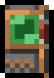
Digivice Burst - Digivice Ic
-
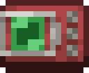
V-Pet - Vital Bracelet
- Xros Loader
- Special Attack Chips
- Bear Punch Chip
- Beast Slash Chip
- Bubble Chip
- Cruel Scissors Chip
- Crystal Rain Chip
- Deadly Sting Chip
- Death Claw Chip
- Disc Attack Chip
- Divine Axe Chip
- Doctase Chip
- Gatling Arm Chip
- Giga Destroyer Chip
- Gliding Rocks Chip
- Gold-Arrow Chip
- Heaven's Knuckle Chip
- Holy Shoot Chip
- Hyper Heat Chip
- Ink Gun Chip
- Love Song Chip
- Mach Tornado Chip
- Magma Spit Chip
- Mega Blaster Chip
- Mega Flame Chip
- Meteor Wing Chip
- Night of Fire Chip
- Ocean Storm Chip
- Pepper Breath Chip
- Petit Thunder Chip
- Petit Twister Chip
- Poison Breath Chip
- Poop Throw Chip
- Sand Blast Chip
- Secret Identity Chip
- Smiley Bomb Chip
- Snow Bullet Chip
- Thunderbolt Chip
- Tron Flame Chip
- V-Arrow Chip
- World Slash Chip
- X-Attack Chip
- Data (XP Items)
- Aquan Data
- Beast Data
- Dragon Data
- Earth Data
- Holy Data
- Machine Data
- Nightmare Data
- Plant/Insect Data
- Poop Data
- Wind Data
- Data Packs
- Aquan Pack
- Beast Pack
- Dragon Pack
- Earth Pack
- Holy Pack
- Machine Pack
- Nightmare Pack
- Plant/Insect Pack
- Poop Pack
- Wind Pack
- Stat Bytes
- Attack Byte
- Defense Byte
- Health Byte
- Sp.Attack Byte
- Sp.Defense Byte
- Stat Drives
- Attack Drive
- Defense Drive
- Health Drive
- Sp.Attack Drive
- Sp.Defense Drive
- Win Drive
- Digitama
-
 Botamon Digitama
Botamon Digitama
- Chicomon Digitama
-
 Jyarimon Digitama
Jyarimon Digitama
-
 Petitmon Digitama
Petitmon Digitama
-
 Fusamon Digitama
Fusamon Digitama
- Punimon Digitama
-
 Bubbmon Digitama
Bubbmon Digitama
- Yuramon Digitama
- Pipmon Digitama
-
 Puyomon Digitama
Puyomon Digitama
- Nyokimon Digitama
- Bommon Digitama
-
 Dokimon Digitama
Dokimon Digitama
- Sunamon Digitama
-
 Algomon Digitama
Algomon Digitama
- Keemon Digitama
-
 Kuramon Digitama
Kuramon Digitama
-
 Zurumon Digitama
Zurumon Digitama
- Cocomon Digitama
-
 Poyomon Digitama
Poyomon Digitama
- Training Goods
- Beach Ball
- Clown Box
- Dragon Bone
- Flytrap
-
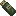
Health Upgrade - Holy Lira
- Learning Table
- M2 Health Disk
-
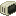
Old Pc - Punching Bag
- Red Freezer
- Target
- Training Bag
- Training Shield
- Training rock
- Wind Vane
- Food & Care
- Big Digi Meat
- Digi Cake
- Digi Meat
- Digi Meat Ribs
- Digi Poop
- Digi Sushi
- Golden Digi Poop
- Guilmon Bread
-
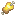
Rotten Digi Meat - Misc
- Black Digitron
- Blue Card
- Boss Cube
- Chrome Digizoid
- Chrondigizoit
- Dark Tower Shard
-
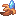
Digi Banana - Digi-Memory
- DigiCore
- Digimon Card
- Goblimon Bat
- Heal Disk
-
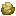
Huanglong Ore - Tame Leash
Blocks
Ores, light sources, a farmable crop and the Digitama (egg) blocks added by the mod. None of these have a dedicated page yet.
- Ores
-
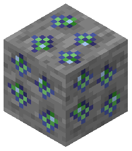
Digi Card Ore Block -
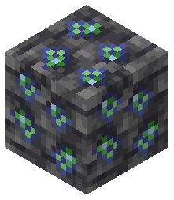
Deepslate Digi Card Ore Block -
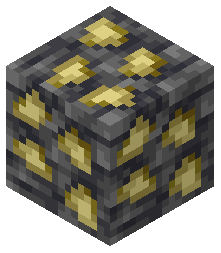
Deepslate Huanglong Ore Block - Light
-
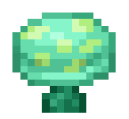
LED Shroom - Farming
-
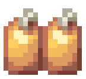
Digimeat Crop - Digitama (Egg Blocks)
- Dragon Digitama
-
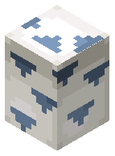
Beast Digitama -
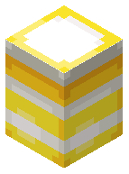
Holy Digitama -
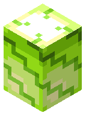
Plant/Insect Digitama -
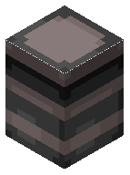
Nightmare Digitama -
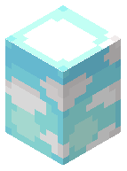
Wind Digitama -
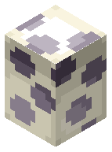
Earth Digitama -
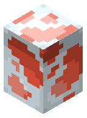
Aquan Digitama -
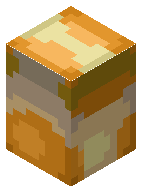
Machine Digitama
Training Good Entities
Training Goods are gym equipment your Digimon works out on to build a specific stat. The item form (in the Items section) is a summon: use it and it spawns the training entity your Digimon actually grinds against. High tier entities hit harder per rep and can drop the Data tied to their attribute.
- Basic Training Good Entities
- Health Update
- Learning Table
- Punching Bag
- Training Shield
- Training Target
- High Tier Training Good Entities
- Beach Ball
- Clown Box
- Dragon Bone
- Flytrap
- Holy Lira
- M2 Health Disk
- Old Pc
- Red Freezer
- Training rock
- Wind Vane
Configs
Every toggle and tunable the mod exposes. The server file
(thedigimod-server.toml) lives on the server and applies to every player in the world.
The client file (thedigimod-client.toml) is per-player and only affects the local machine.
Side note: disabling Digimon professions is not a separate config. If you want those off,
set vanilla mobGriefing to false.
- World & Spawning
- Digimon Spawn Enabled
- Fire Attacks Spread Fire
- New Player
- Give Training Bag On First Join
- Riding
- Ground Digimon Rideable
- Flying Digimon Rideable
- Lives & Memory Cards
- Tamed Digimon Lives Max
- Allow Memory Cards
- Evolution Levels
- Rookie Evolution Level
- Champion Evolution Level
- Ultimate Evolution Level
- Baby I to Baby II Evolution Seconds
- Wild Digimon Drop Chances
- Baby Drop Chance
- Move Chip Drop Chance
- Digi Food Drop Chance
- Green Card Drop Chance
- Stat Bytes Drop Chance
- Digimon Size (%)
- Baby Digimon Size
- Rookie Digimon Size
- Champion Digimon Size
- Ultimate Digimon Size
- Boss Digimon Size
- Boss Bar Render Distance
- Training Stat Gain per Rep
- Failed Rank Min Stat Gain
- Failed Rank Max Stat Gain
- Zero Rank Min Stat Gain
- Zero Rank Max Stat Gain
- Super Rank Min Stat Gain
- Super Rank Max Stat Gain
- Client (
thedigimod-client.toml) - Render Dirty Digimon Effect
- Render Digimon Glowmasks
Mod Relations
GeckoLib is a required dependency - the mod won't load without it. Everything else below is optional Spawn Biome integration: if one of those mods is also installed, wild Digimon check its biomes for a valid spawn too, on top of vanilla's. Biomes O' Plenty is the most recent addition to this list.
- Required Dependency
- GeckoLib
- Spawn Biome Integration
-
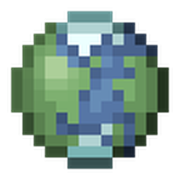
Biomes O' Plenty -
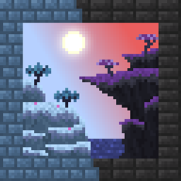
Blue Skies -
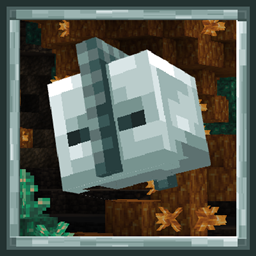
Galosphere - Mystic's Biomes
-
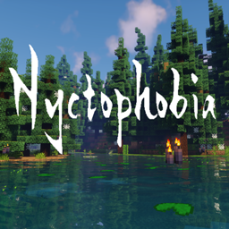
Nyctophobia - Oh The Biomes You'll Go
-
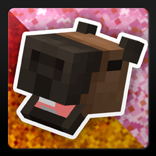
Promenade - Regions Unexplored
-
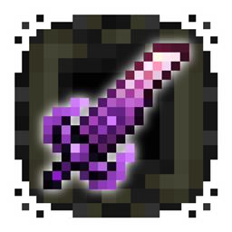
Stellarity - Terralith
- Terrestria
-
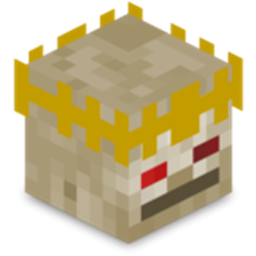
The Twilight Forest - Traverse Reforged
-
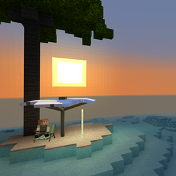
Tropicraft -
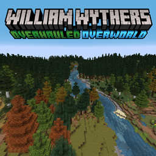
William Wythers' Overhauled Overworld - YUNG's Cave Biomes
FAQ / GETTING STARTED
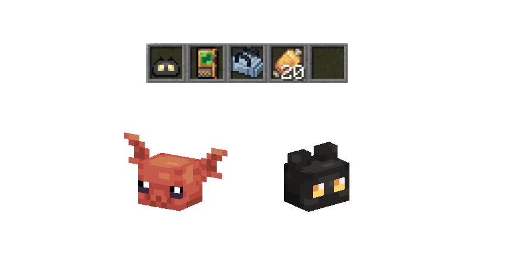
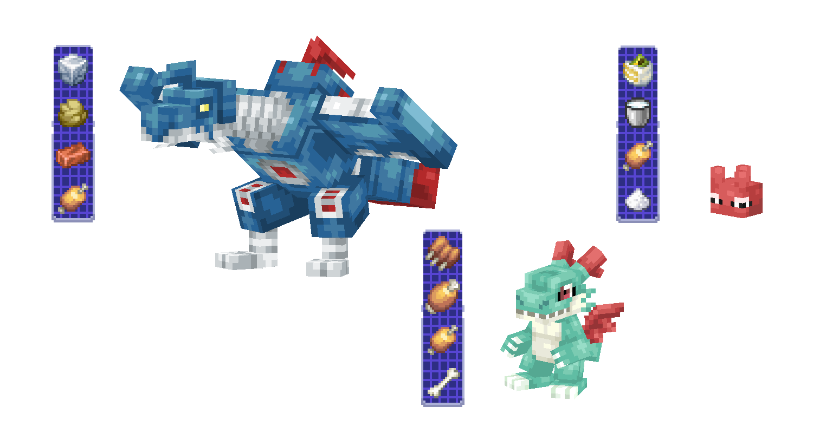
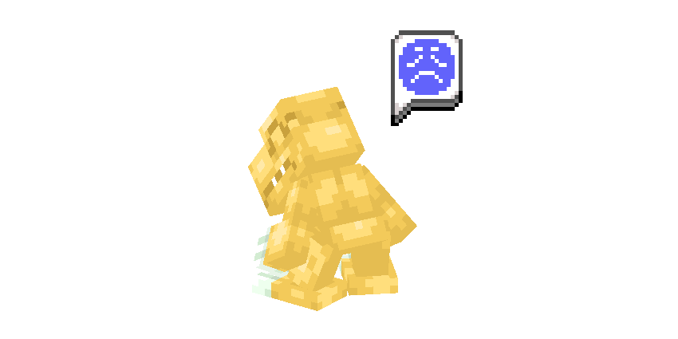
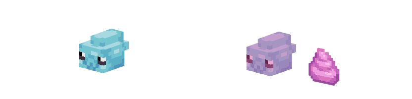
DIGIVICES / MENUS
TRAINING & BATTLING
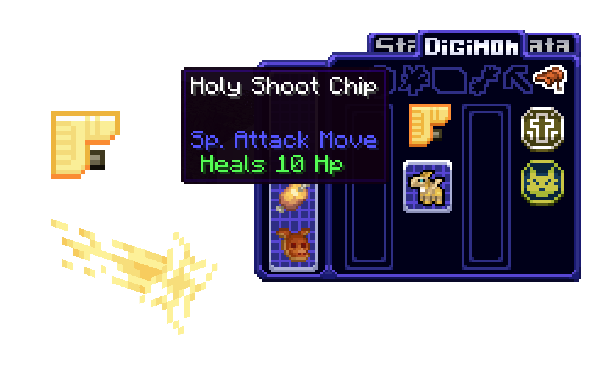
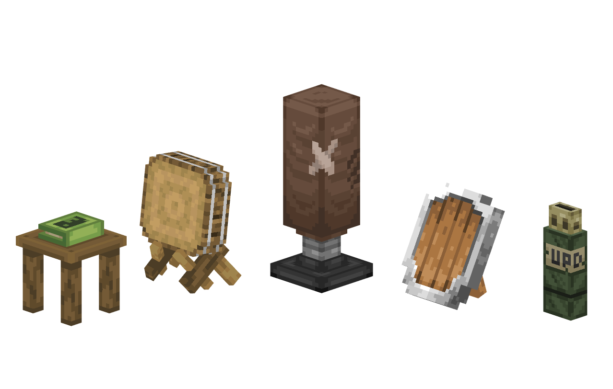
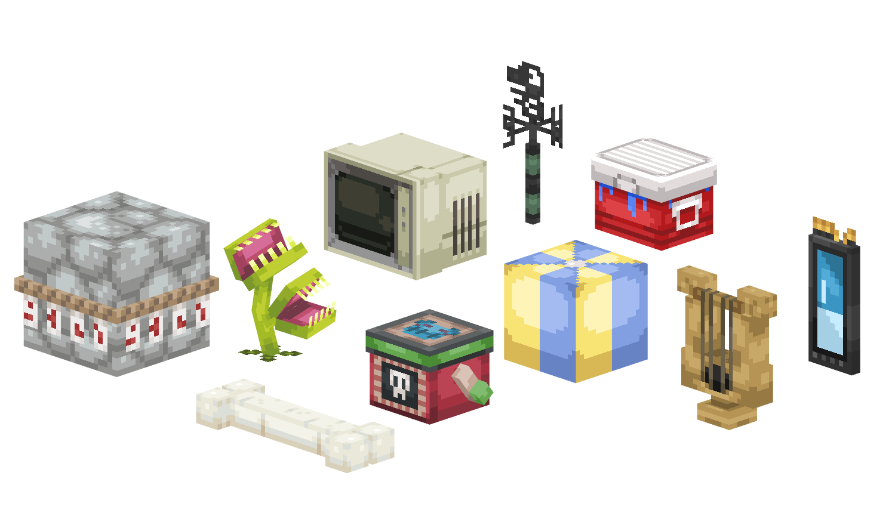
EVOLUTION / LINES
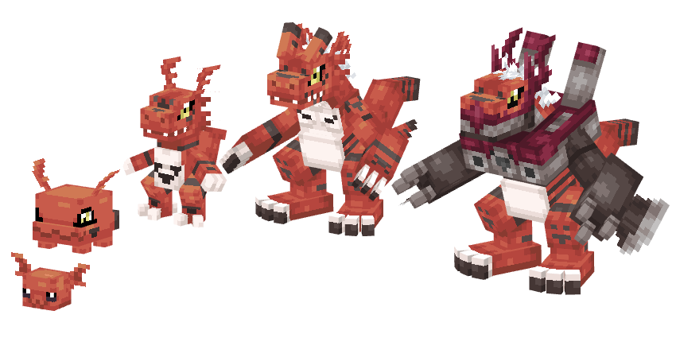
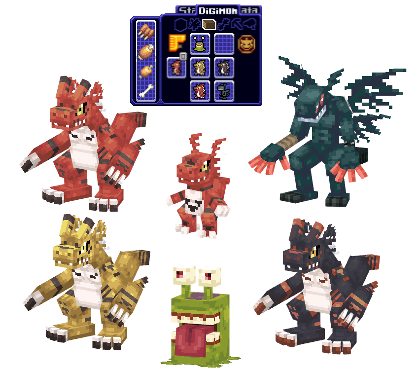
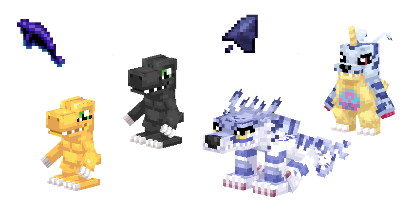